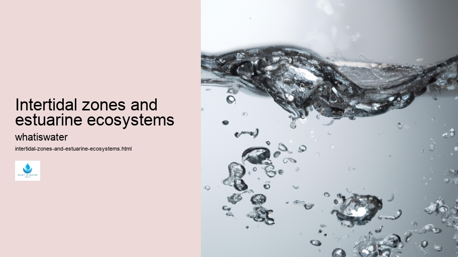

Hydrological Cycle
Hydrological Cycle
Evaporation and transpiration
Condensation and cloud formation
Precipitation and rain patterns
Surface runoff and river systems
Groundwater flow and aquifers
Snowmelt and glacial processes
Water storage in oceans lakes and reservoirs
Soil moisture and infiltration
Water balance and budgeting
Human impact on the hydrological cycle
Marine Ecosystems
Marine Ecosystems
Coral reefs and their biodiversity
Mangrove forests as coastal protectors
Ocean currents and climate regulation
Deepsea habitats and extremophiles
Intertidal zones and estuarine ecosystems
Marine food webs and trophic levels
Freshwater Ecosystems
Freshwater Ecosystems
Conservation efforts for marine species
Marine biogeochemical cycles
Impact of global warming on oceans
Water Resource Management
Water Resource Management
Rivers streams and creeks ecosystems
Lakes ponds wetlands habitats
Biodiversity in freshwater environments
Aquatic plants role in oxygenation
Freshwater fish species diversity
Invasive species impact on freshwater systems
Pollution threats to freshwater sources
Conservation strategies for freshwater biomes
Role of wetlands in flood control
Importance of riparian buffers
Cultural Significance of Water
Cultural Significance of Water
Sustainable water use practices
Desalination technologies for fresh water supply
Wastewater treatment processes
Rainwater harvesting techniques
Management of water during drought conditions
Transboundary water resource politics
Infrastructure for water distribution
Agricultural irrigation efficiency
Urban water demand management
Impact of climate change on water resources
About Us
Contact Us

Intertidal zones and estuarine ecosystems
Hydrologic Cycle
Intertidal zones, the narrow belts where land and sea interface, present fascinating ecosystems that teem with life. These areas experience both submersion under seawater during high tides and exposure to air at low tides.
Intertidal zones and estuarine ecosystems - Water Footprint
Water Sports and Recreation
Marine Pollution
Irrigation
Water Footprint
Bottled Water
Thermal Pollution
This constant flux creates a challenging environment for organisms living here, necessitating unique adaptations for survival.
Estuarine ecosystems exist where freshwater from rivers mixes with saltwater from seas or oceans.
Irrigation
They form transitional zones with brackish water and are among the most productive natural habitats on Earth.
Intertidal zones and estuarine ecosystems - Marine Pollution
Water Management
Watersheds
Water Sports and Recreation
Estuaries serve as nurseries for many marine species, filter pollutants from runoff before they reach open waters, and provide protection against storms.
Both environments endure significant ecological pressures due to their positions at the edge of aquatic and terrestrial realms. Climate change impacts these delicate systems through rising sea levels, changes in salinity, and altered weather patterns. Additionally, human activities such as coastal development and pollution further threaten their integrity.
Conservation efforts focus on preserving biodiversity within intertidal zones and estuaries by establishing protected areas, restoring damaged habitats, controlling invasive species, and promoting sustainable practices among local communities.
Marine Pollution
Water Management
The safeguarding of these critical regions not only protects numerous plant and animal species but also supports the livelihoods of millions who rely on the resources provided by these vibrant ecosystems.
Understanding the symbiotic relationship between humans and these ecosystems is essential for ensuring their future health.
Water Sports and Recreation
Education plays a vital role in fostering an appreciation for the complexity of intertidal zones and estuarine environments while encouraging responsible stewardship to maintain their ecological functions for generations to come.
In summary, intertidal zones are dynamic interfaces between land and ocean that host specialized life forms adapted to alternating wet and dry conditions.
Water Footprint
Estuarine ecosystems are equally important as they blend fresh- with saltwater creating rich habitats vital for biodiversity conservation. Both face threats exacerbated by human activity but can be preserved through concerted global conservation strategies aimed at ensuring their resilience amidst environmental changes.
Hydrological Cycle
Marine food webs and trophic levels
Check our other pages :
Soil moisture and infiltration
Hydrological Cycle
Evaporation and transpiration
Impact of climate change on water resources
Frequently Asked Questions
What are intertidal zones and how do they support biodiversity?
Intertidal zones, also known as the foreshore or seashore, are coastal areas that lie between the high tide mark and the low tide mark. They are unique ecosystems that experience regular and rhythmic exposure to air and immersion in seawater due to tidal movements. These zones support a high level of biodiversity by providing various habitats, such as rocky shores, sandy beaches, mudflats, and mangroves that harbor distinct communities of plants, animals, and microorganisms adapted to withstand the changing conditions like varying salinity levels, water temperature fluctuations, and differing degrees of submersion.
What is an estuarine ecosystem and why is it important for both marine life and humans?
An estuarine ecosystem is where freshwater from rivers meets and mixes with saltwater from the ocean, creating brackish water. Estuaries are among the most productive natural habitats in the world because they provide rich nutrients from both marine and terrestrial sources. This makes them crucial nursery grounds for many marine species including fish, crustaceans, and shellfish which have significant ecological value as well as economic importance for fisheries. For humans, estuaries offer protection against storm surges; filtration of pollutants; recreational opportunities; cultural values; and resources for transportation, industry, and agriculture.
How do tides affect life in intertidal zones?
Tides generate a cyclic environment within intertidal zones causing periodic submersion in seawater followed by exposure to air. Organisms living here have evolved adaptations to cope with these changes. During high tides aquatic species can feed and breed while being protected from terrestrial predators. Low tides allow organisms like shorebirds access to food such as mollusks or crustaceans but also expose aquatic organisms to predation from land-based creatures as well as physical challenges like desiccation (drying out) or temperature extremes. The ability of flora and fauna to adapt their behaviors according to tidal rhythms is essential for survival in this dynamic habitat.